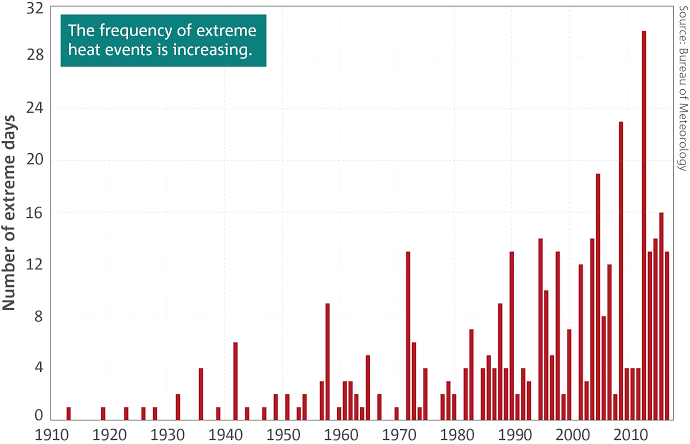
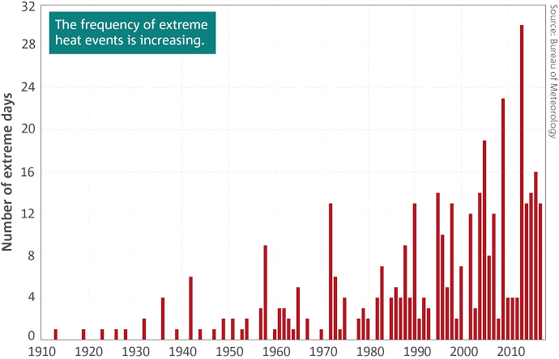

Bushfire FAQ
How did climate change affect the bushfires?
When people say that the "bushfires were caused by climate change", they do not literally mean the bushfires were lit because of climate change. Rather, they were "caused" by climate change because climate change created an environment in which it was easier for bushfires to start.
What is this environment, and how is it different to 10 or 50 years ago?
The new environment is one in which it is hotter and dryer for a longer period of the year. This has two effects, the first being that the heat and dryness increase the frequency and severity of bushfires; and the second being that this makes it too dangerous to perform burn offs.
Weren't there no burn offs because of Green's policies?
It is not against Green's policy to perform burnoffs. In fact it is explicitly their policy to perform burnoffs. See the Green's policy site. There is no, and never has been a basis to this claim.
Why were there less burn offs this year then?
As Greg Mullins, Former Fire and Rescue NSW Commissioner, said in an article for the Sydney Morning Herald, "Unprecedented dryness; reductions in long-term rainfall; low humidity; high temperatures; wind velocities; fire danger indices; fire spread and ferocity; instances of pyro-convective fires (fire storms - making their own weather); early starts and late finishes to bushfire seasons. An established long-term trend driven by a warming, drying climate."
Additionally the NSW RFS "fire-trained" staff was cut by 35% in 2018, reducing their capacity to administer burn offs safely.
There were worse bushfires in 1983 and 1967!
There will always be outliers in any period of time, such as in 1983 and 1967. Climate change simply means the general trend of bushfire severity is upwards. This does not mean that Australia will experience bushfires as destructive as the worst of the 20th century every year, just that on average they will be worse.
This year is just an outlier!
This year very probably is just an outlier, however the number of "outlier" years will increase as climate change worsens.
Just look at the graphs, you're wrong!
 

Seems like a clear trend to me.
What can we do?
In order to prevent the worst effects of climate change, anthroprogenic emissions of greenhouse gasses must be limited by as much as possible as soon as possible. There are two sides to achieving this goal: prevention and reduction.
Reduction
Reduction is the act of reducing the damage already done to the environment. Effective ways to do so involve the re-forestation of logged areas, and the investment into engineering solutions that attempt to pull greenhouse gasses out of the atmosphere.
Prevention
Prevention of the emission of greenhouse gasses is unfortunately a "tradgedy of the commons" scenario, where if each participant were to act in their own self interest there would be no effective policy, thus collective action is necessary. This is the purpose of international agreements such as the 1997 Kyoto Protocol and the 2017 Paris Agreement. Domestically there are several policies that can be put in place to reach and even exceed the international limits, most notably green energy policy and carbon trading and pricing schemes. Green energy policy involves the transition to near 100% renewable energy sources such as solar and wind, with nuclear energy to make up for shortfalls in the energy supply. Carbon trading and pricing schemes, such as the one implemented by the Gillard government in 2011, set a limit on the volume of emissions each company can output annually. Companies can then sell their excess to other entities that require a higher limit. This sets a hard limit on the amount of emissions Australia can output, while also incentivising green investment. Economic analysis of Gillard and other country's pricing and trading schemes have found that they have only a small impact on GDP.
All text content on this page is licenced under CC BY-SA 3.0 (AU). You can contribute on Github at https://github.com/BenMMcLean/bushfi.re